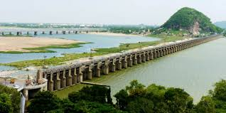

Prakasam Barrage
The Prakasam Barrage is a significant structure built across the Krishna River in Vijayawada, Andhra Pradesh. This barrage serves as a road bridge and is a major source of irrigation, supporting agricultural activities in the region. It also provides a picturesque view, especially when illuminated at night.
Location: Vijayawada, Andhra Pradesh, India
History: The Prakasam Barrage was initially constructed in 1855 and later reconstructed in 1957. It is named after the first Chief Minister of Andhra Pradesh, Tanguturi Prakasam.
Attractions: The barrage is not only an engineering marvel but also a popular tourist spot. Visitors can enjoy a scenic view of the Krishna River and the surrounding areas.
Activities: Walking across the barrage, photography, and enjoying the night view when the barrage is illuminated.
Visiting Hours: Open 24 hours
Entrance Fee: Free